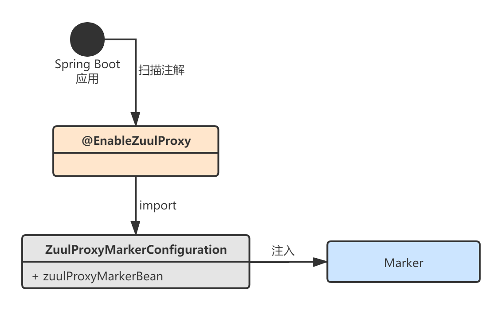
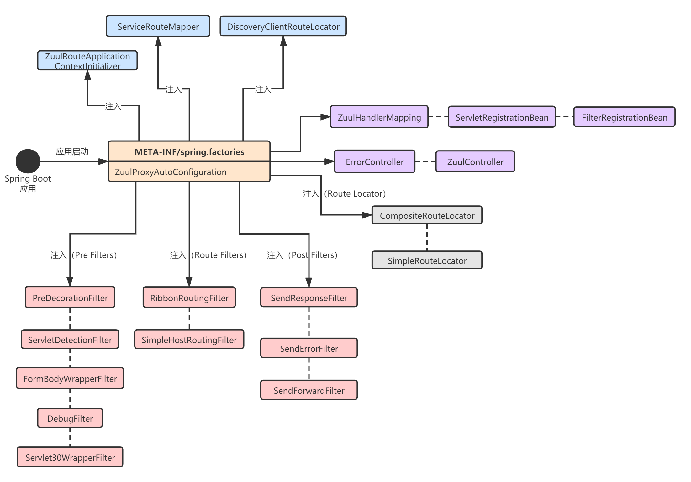
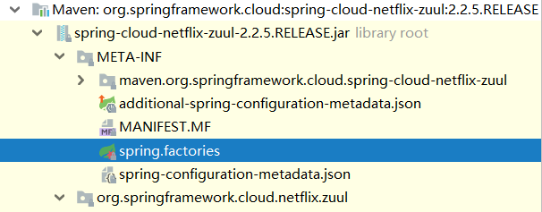
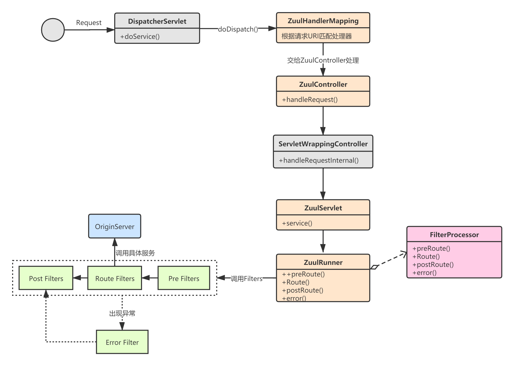
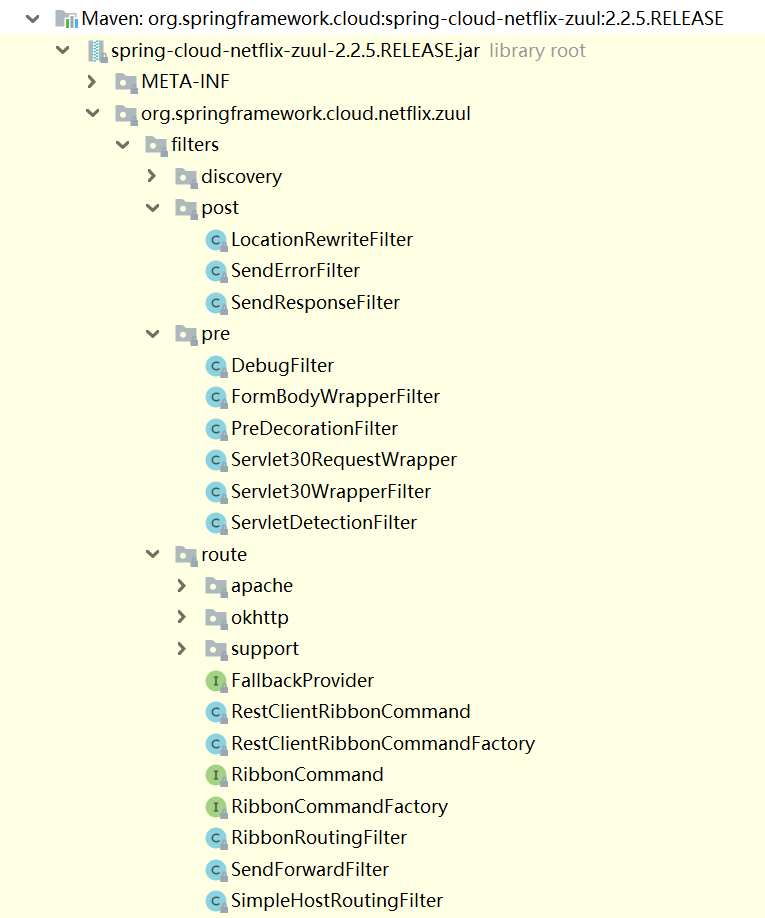
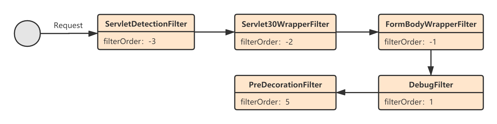
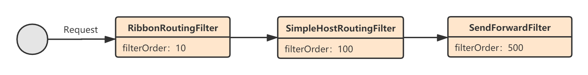
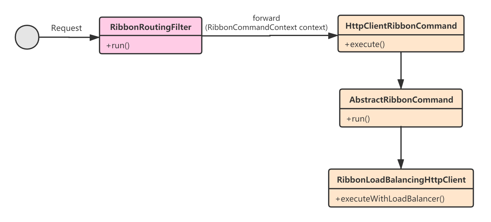
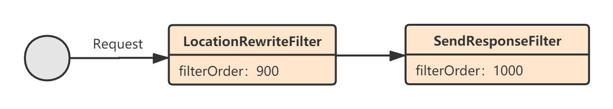

本文介绍：
Zuul初始化流程
Zuul执行流程
Zuul过滤器
Spring Boot应用启动后，会去两个地方加载配置：
扫描到@EnableZuulProxy注解，执行注解中的@Import操作；
加载spring-cloud-netflix-zuul源码包META-INF目录下的spring.factories配置。

ZuulProxyAutoConfiguration

1(ElementType.TYPE)3(RetentionPolicy.RUNTIME)4(ZuulProxyMarkerConfiguration.class)5public @interface EnableZuulProxy {6} @EnableZuulProxy这个注解上标注了@EnableCircuitBreaker，说明Zuul和Hystrix是天然整合在一起的。我们继续看ZuulProxyMarkerConfiguration，它往Spring IoC容器中注入了一个标记对象Marker（啥功能都没有）：
x1(proxyBeanMethods = false)2public class ZuulServerMarkerConfiguration {3 4 public Marker zuulServerMarkerBean() {5 return new Marker();6 }7
8 class Marker {9 }10}
41# spring.factories2org.springframework.boot.autoconfigure.EnableAutoConfiguration=\3org.springframework.cloud.netflix.zuul.ZuulServerAutoConfiguration,\4org.springframework.cloud.netflix.zuul.ZuulProxyAutoConfiguration 可以看到，主要就是加载了两个自动装配类： ZuulServerAutoConfiguration 和 ZuulProxyAutoConfiguration 。ZuulProxyAutoConfiguration是ZuulServerAutoConfiguration的子类，它整合了Ribbon相关的功能。
我们先来看ZuulServerAutoConfiguration，它的主要作用如下：
向Spring IoC容器注入Zuul相关配置：ZuulProperties、ServerProperties；
注入Zuul的几个核心组件：ErrorController、ZuulController、ZuulHandlerMapping、ZuulServlet；
注入一系列路由加载器RouteLocator，用于根据请求URI匹配路由；
注入一系列的Filter。
2121// ZuulServerAutoConfiguration.java2
3(proxyBeanMethods = false)4({ ZuulProperties.class })5({ ZuulServlet.class, ZuulServletFilter.class })6(ZuulServerMarkerConfiguration.Marker.class) // 注意这里用到了Marker标记类7public class ZuulServerAutoConfiguration {8
9 // yml配置，zuul开头相关配置在这注入10 11 protected ZuulProperties zuulProperties;12
13 // yml配置，server开头相关配置在这注入，比如server.port14 15 protected ServerProperties server;16
17 // 处理错误的Spring MVC Controller18 (required = false)19 private ErrorController errorController;20
21 //...22
23 // 组合路由加载器24 25 26 public CompositeRouteLocator primaryRouteLocator(27 Collection<RouteLocator> routeLocators) {28 return new CompositeRouteLocator(routeLocators);29 }30
31 // 简单路由加载器32 33 (SimpleRouteLocator.class)34 public SimpleRouteLocator simpleRouteLocator() {35 return new SimpleRouteLocator(this.server.getServlet().getContextPath(),36 this.zuulProperties);37 }38
39 // ZuulController，Zuul请求入口Controller40 41 public ZuulController zuulController() {42 return new ZuulController();43 }44
45 // Zuul请求映射处理器46 47 public ZuulHandlerMapping zuulHandlerMapping(RouteLocator routes,48 ZuulController zuulController) {49 ZuulHandlerMapping mapping = new ZuulHandlerMapping(routes, zuulController);50 mapping.setErrorController(this.errorController);51 mapping.setCorsConfigurations(getCorsConfigurations());52 return mapping;53 }54
55 // 路由刷新监听器56 57 public ApplicationListener<ApplicationEvent> zuulRefreshRoutesListener() {58 return new ZuulRefreshListener();59 }60
61 // ZuulServlet62 63 (name = "zuulServlet")64 (name = "zuul.use-filter", havingValue = "false",65 matchIfMissing = true)66 public ServletRegistrationBean zuulServlet() {67 ServletRegistrationBean<ZuulServlet> servlet = new ServletRegistrationBean<>(68 new ZuulServlet(), this.zuulProperties.getServletPattern());69 servlet.addInitParameter("buffer-requests", "false");70 return servlet;71 }72
73 // 创建了ZuulServlet74 75 (name = "zuulServlet")76 (name = "zuul.use-filter", havingValue = "false",77 matchIfMissing = true)78 public ServletRegistrationBean zuulServlet() {79 ServletRegistrationBean<ZuulServlet> servlet = new ServletRegistrationBean<>(80 new ZuulServlet(), this.zuulProperties.getServletPattern());81 servlet.addInitParameter("buffer-requests", "false");82 return servlet;83 }84
85 // 创建了ZuulServletFilter86 87 (name = "zuulServletFilter")88 (name = "zuul.use-filter", havingValue = "true", matchIfMissing = false)89 public FilterRegistrationBean zuulServletFilter() {90 final FilterRegistrationBean<ZuulServletFilter> filterRegistration = 91 new FilterRegistrationBean<>();92 filterRegistration.setUrlPatterns(93 Collections.singleton(this.zuulProperties.getServletPattern()));94 filterRegistration.setFilter(new ZuulServletFilter());95 filterRegistration.setOrder(Ordered.LOWEST_PRECEDENCE);96 filterRegistration.addInitParameter("buffer-requests", "false");97 return filterRegistration;98 }99
100 // pre filters101
102 103 public ServletDetectionFilter servletDetectionFilter() {104 return new ServletDetectionFilter();105 }106
107 108 109 public FormBodyWrapperFilter formBodyWrapperFilter() {110 return new FormBodyWrapperFilter();111 }112
113 114 115 public DebugFilter debugFilter() {116 return new DebugFilter();117 }118
119 120 121 public Servlet30WrapperFilter servlet30WrapperFilter() {122 return new Servlet30WrapperFilter();123 }124
125 // post filters126
127 128 public SendResponseFilter sendResponseFilter(ZuulProperties properties) {129 return new SendResponseFilter(zuulProperties);130 }131
132 133 public SendErrorFilter sendErrorFilter() {134 return new SendErrorFilter();135 }136
137 138 public SendForwardFilter sendForwardFilter() {139 return new SendForwardFilter();140 }141
142 // 用于Zuul的eager加载初始化类143 144 ("zuul.ribbon.eager-load.enabled")145 public ZuulRouteApplicationContextInitializer zuulRoutesApplicationContextInitiazer(146 SpringClientFactory springClientFactory) {147 return new ZuulRouteApplicationContextInitializer(springClientFactory,148 zuulProperties);149 }150
151 // 该类的作用主要是把初始化的过滤器注册到zuul的FilterRegistry中152 (proxyBeanMethods = false)153 protected static class ZuulFilterConfiguration {154
155 156 private Map<String, ZuulFilter> filters;157
158 159 public ZuulFilterInitializer zuulFilterInitializer(CounterFactory counterFactory,160 TracerFactory tracerFactory) {161 FilterLoader filterLoader = FilterLoader.getInstance();162 // FilterRegistry是一个单例用于初始化路由信息，在ZuulRunner中使用163 FilterRegistry filterRegistry = FilterRegistry.instance();164 return new ZuulFilterInitializer(this.filters, counterFactory, tracerFactory,165 filterLoader, filterRegistry);166 }167
168 }169
170 // Zuul路由刷新监听器171 private static class ZuulRefreshListener172 implements ApplicationListener<ApplicationEvent> {173
174 175 private ZuulHandlerMapping zuulHandlerMapping;176
177 private HeartbeatMonitor heartbeatMonitor = new HeartbeatMonitor();178
179 180 public void onApplicationEvent(ApplicationEvent event) {181 if (event instanceof ContextRefreshedEvent182 || event instanceof RefreshScopeRefreshedEvent183 || event instanceof RoutesRefreshedEvent184 || event instanceof InstanceRegisteredEvent) {185 // 刷新路由186 reset();187 }188 else if (event instanceof ParentHeartbeatEvent) {189 ParentHeartbeatEvent e = (ParentHeartbeatEvent) event;190 resetIfNeeded(e.getValue());191 }192 else if (event instanceof HeartbeatEvent) {193 HeartbeatEvent e = (HeartbeatEvent) event;194 resetIfNeeded(e.getValue());195 }196 }197
198 private void resetIfNeeded(Object value) {199 if (this.heartbeatMonitor.update(value)) {200 reset();201 }202 }203
204 private void reset() {205 // 设置dirty标识，下一次匹配到路径时，如果dirty==true，就会刷新路由信息206 this.zuulHandlerMapping.setDirty(true);207 }208
209 }210
211 //...212}我们再来看ZuulProxyAutoConfiguration这个自动装配类，可以看到，它导入了Ribbon相关的配置，这就是为什么Zuul可以通过服务名进行路由，因为天然整合了Ribbon。
ZuulProxyAutoConfiguration主要就是额外增加了Ribbon和服务发现的功能：
注入了Ribbon和Eureka（默认）相关的Bean；
注入了DiscoveryClientRouteLocator，用于根据服务名称路由；
注入了PreDecorationFilter、RibbonRoutingFilter、SimpleHostRoutingFilter这三个Filter。
781// ZuulProxyAutoConfiguration.java2
3(proxyBeanMethods = false)4({ RibbonCommandFactoryConfiguration.RestClientRibbonConfiguration.class,5 RibbonCommandFactoryConfiguration.OkHttpRibbonConfiguration.class,6 RibbonCommandFactoryConfiguration.HttpClientRibbonConfiguration.class,7 HttpClientConfiguration.class })8(ZuulProxyMarkerConfiguration.Marker.class) // 注意这里用到了Marker标记对象9public class ZuulProxyAutoConfiguration extends ZuulServerAutoConfiguration {10
11 ("rawtypes")12 (required = false)13 private List<RibbonRequestCustomizer> requestCustomizers = Collections.emptyList();14
15 (required = false)16 private Registration registration;17
18 19 private DiscoveryClient discovery;20
21
22 // 路由加载器23 24 (DiscoveryClientRouteLocator.class)25 public DiscoveryClientRouteLocator discoveryRouteLocator(26 ServiceRouteMapper serviceRouteMapper) {27 return new DiscoveryClientRouteLocator(this.server.getServlet().getContextPath(),28 this.discovery, this.zuulProperties, serviceRouteMapper,29 this.registration);30 }31
32 // pre filters33 34 (PreDecorationFilter.class)35 public PreDecorationFilter preDecorationFilter(RouteLocator routeLocator,36 ProxyRequestHelper proxyRequestHelper) {37 return new PreDecorationFilter(routeLocator,38 this.server.getServlet().getContextPath(), this.zuulProperties,39 proxyRequestHelper);40 }41
42 // route filters43 44 (RibbonRoutingFilter.class)45 public RibbonRoutingFilter ribbonRoutingFilter(ProxyRequestHelper helper,46 RibbonCommandFactory<?> ribbonCommandFactory) {47 RibbonRoutingFilter filter = new RibbonRoutingFilter(helper, ribbonCommandFactory,48 this.requestCustomizers);49 return filter;50 }51
52 53 ({ SimpleHostRoutingFilter.class,54 CloseableHttpClient.class })55 public SimpleHostRoutingFilter simpleHostRoutingFilter(ProxyRequestHelper helper,56 ZuulProperties zuulProperties,57 ApacheHttpClientConnectionManagerFactory connectionManagerFactory,58 ApacheHttpClientFactory httpClientFactory) {59 return new SimpleHostRoutingFilter(helper, zuulProperties,60 connectionManagerFactory, httpClientFactory);61 }62
63 64 ({ SimpleHostRoutingFilter.class })65 public SimpleHostRoutingFilter simpleHostRoutingFilter2(ProxyRequestHelper helper,66 ZuulProperties zuulProperties, CloseableHttpClient httpClient) {67 return new SimpleHostRoutingFilter(helper, zuulProperties, httpClient);68 }69
70 // ServiceRouteMapper71 72 (ServiceRouteMapper.class)73 public ServiceRouteMapper serviceRouteMapper() {74 return new SimpleServiceRouteMapper();75 }76
77 //...78}Zuul处理请求的整个流程可以用下面这张图表示：

事实上，Spring Cloud Netflix Zuul集成了Spring MVC框架，所有http请求首先会由DispatcherServlet进行处理。DispatcherServlet会将请求交给映射处理器——ZuulHandlerMapping，最终转发给ZuulController进行处理：
451// DispatcherServlet.java2
3protected void doDispatch(HttpServletRequest request, HttpServletResponse response) throws Exception {4 HttpServletRequest processedRequest = request;5 HandlerExecutionChain mappedHandler = null;6 boolean multipartRequestParsed = false;7 WebAsyncManager asyncManager = WebAsyncUtils.getAsyncManager(request);8 try {9 ModelAndView mv = null;10 Exception dispatchException = null;11 try {12 //...13
14 // 获取请求映射处理器15 mappedHandler = getHandler(processedRequest);16 if (mappedHandler == null) {17 noHandlerFound(processedRequest, response);18 return;19 }20
21 // 处理适配器22 HandlerAdapter ha = getHandlerAdapter(mappedHandler.getHandler());23
24 //...25
26 // 处理请求27 mv = ha.handle(processedRequest, response, mappedHandler.getHandler());28
29 if (asyncManager.isConcurrentHandlingStarted()) {30 return;31 }32
33 applyDefaultViewName(processedRequest, mv);34 mappedHandler.applyPostHandle(processedRequest, response, mv);35 }36 catch (Exception ex) {37 dispatchException = ex;38 }39 catch (Throwable err) {40 dispatchException = new NestedServletException("Handler dispatch failed", err);41 }42 processDispatchResult(processedRequest, response, mappedHandler, mv, dispatchException);43 }44 //...45}DispatcherServlet和HandlerMapping都属于Spring MVC的内部，我这里就不赘述了，
MVC文档：https://docs.spring.io/spring-framework/docs/current/reference/html/web.html#spring-web。
ZuulHandlerMapping会根据请求URI，查找对应的处理器，其实是最终将请求转交给ZuulController进行处理：
401// ZuulHandlerMapping.java2
3protected Object lookupHandler(String urlPath, HttpServletRequest request) throws Exception {5 if (this.errorController != null && urlPath.equals(this.errorController.getErrorPath())) {6 return null;7 }8 if (isIgnoredPath(urlPath, this.routeLocator.getIgnoredPaths())) {9 return null;10 }11 // RequestContext是请求上下文信息，用ThreadLocal保证线程安全12 RequestContext ctx = RequestContext.getCurrentContext();13 if (ctx.containsKey("forward.to")) {14 return null;15 }16 17 // dirty==true时，会更新请求路由18 if (this.dirty) {19 synchronized (this) {20 if (this.dirty) {21 // 往下看22 registerHandlers();23 this.dirty = false;24 }25 }26 }27 return super.lookupHandler(urlPath, request);28}29
30private void registerHandlers() {31 Collection<Route> routes = this.routeLocator.getRoutes();32 if (routes.isEmpty()) {33 this.logger.warn("No routes found from RouteLocator");34 }35 else {36 for (Route route : routes) {37 registerHandler(route.getFullPath(), this.zuul);38 }39 }40}ZuulController继承自ServletWrappingController，其实就是增加了清理请求上下文RequestContext的功能：
221// ZuulController.java2
3public class ZuulController extends ServletWrappingController {4 public ZuulController() {5 setServletClass(ZuulServlet.class);6 setServletName("zuul");7 setSupportedMethods((String[]) null); // Allow all8 }9
10 11 public ModelAndView handleRequest(HttpServletRequest request, HttpServletResponse response) throws Exception {12 try {13 // We don't care about the other features of the base class, just want to14 // handle the request15 return super.handleRequestInternal(request, response);16 }17 finally {18 // 清理请求上下文信息19 RequestContext.getCurrentContext().unset();20 }21 }22}接下来，ZuulController会将请求交给ZuulServlet处理。ZuulServlet的执行逻辑还是很清晰的，就是依次去调用Pre、Route、Post过滤器：
501// ZuulServlet.java2
3public void service(javax.servlet.ServletRequest servletRequest, javax.servlet.ServletResponse servletResponse) throws ServletException, IOException {4 try {5 // 1.初始化ZuulRunner：内部封装了对Filter的调用逻辑6 init((HttpServletRequest) servletRequest, (HttpServletResponse) servletResponse);7 RequestContext context = RequestContext.getCurrentContext();8 context.setZuulEngineRan();9
10 try {11 // 2.pre过滤器处理12 preRoute();13 } catch (ZuulException e) {14 error(e);15 postRoute();16 return;17 }18 try {19 // 3.Route过滤器处理20 route();21 } catch (ZuulException e) {22 error(e);23 postRoute();24 return;25 }26 try {27 // 4. Post过滤器处理28 postRoute();29 } catch (ZuulException e) {30 error(e);31 return;32 }33
34 } catch (Throwable e) {35 error(new ZuulException(e, 500, "UNHANDLED_EXCEPTION_" + e.getClass().getName()));36 } finally {37 // 清除ThreadLocal中保存的上下文信息38 RequestContext.getCurrentContext().unset();39 }40}41
42public void init(ServletConfig config) throws ServletException {44 super.init(config);45
46 String bufferReqsStr = config.getInitParameter("buffer-requests");47 boolean bufferReqs = bufferReqsStr != null && bufferReqsStr.equals("true") ? true : false;48
49 zuulRunner = new ZuulRunner(bufferReqs);50}这里要注意ZuulRunner这个类，它的作用其实就是对HttpRequest和HttpResponse进行了封装，然后又封装了一层Filters的调用逻辑：
391public class ZuulRunner {2 private boolean bufferRequests;3
4 public ZuulRunner() {5 this.bufferRequests = true;6 }7
8 public ZuulRunner(boolean bufferRequests) {9 this.bufferRequests = bufferRequests;10 }11
12 public void init(HttpServletRequest servletRequest, HttpServletResponse servletResponse) {13 // 封装HttpServletRequest和HttpServletResponse，并保存到请求上下文中14 RequestContext ctx = RequestContext.getCurrentContext();15 if (bufferRequests) {16 ctx.setRequest(new HttpServletRequestWrapper(servletRequest));17 } else {18 ctx.setRequest(servletRequest);19 }20
21 ctx.setResponse(new HttpServletResponseWrapper(servletResponse));22 }23
24 public void postRoute() throws ZuulException {25 FilterProcessor.getInstance().postRoute();26 }27
28 public void route() throws ZuulException {29 FilterProcessor.getInstance().route();30 }31
32 public void preRoute() throws ZuulException {33 FilterProcessor.getInstance().preRoute();34 }35
36 public void error() {37 FilterProcessor.getInstance().error();38 }39}Zuul的核心功能都是通过一个个过滤器（Filter）来实现的Zuul一共有四种类型的过滤器，Spring Cloud启动时会注入以下类型的过滤器（数字表示优先级 数字越小越优先）：
Pre过滤器：
-3：ServletDetectionFilter
-2：Servlet30WrapperFilter
-1：FromBodyWrapperFilter
1：DebugFilter
5：PreDecorationFilter
Route过滤器：
10：RibbonRoutingFilter
100：SimpleHostRoutingFilter
500：SendForwardFilter
Post过滤器：
900：LocationRewriteFilter
1000：SendResponseFilter
Error过滤器：
0：SendErrorFilter
上述这些过滤器全部定义在Spring Cloud Netflix Zuul的filters包目录下

ZuulServlet在处理请求时，会将请求交给ZuulRunner处理，而ZuulRunner内部又将请求交给FilterProcessor处理，以Pre Filter为例：
581// ZuulServlet.java2
3public void preRoute() throws ZuulException {4 try {5 // 执行所有Pre Filters6 runFilters("pre");7 } catch (ZuulException e) {8 throw e;9 } catch (Throwable e) {10 throw new ZuulException(e, 500, "UNCAUGHT_EXCEPTION_IN_PRE_FILTER_" + e.getClass().getName());11 }12}13
14public Object runFilters(String sType) throws Throwable {15 // DEBUG日志16 if (RequestContext.getCurrentContext().debugRouting()) {17 Debug.addRoutingDebug("Invoking {" + sType + "} type filters");18 }19 boolean bResult = false;20 21 // ---往下看---22 // 获取所有Filters23 List<ZuulFilter> list = FilterLoader.getInstance().getFiltersByType(sType);24 // ---end---25 if (list != null) {26 for (int i = 0; i < list.size(); i++) {27 ZuulFilter zuulFilter = list.get(i);28 // 执行Filter29 Object result = processZuulFilter(zuulFilter);30 if (result != null && result instanceof Boolean) {31 bResult |= ((Boolean) result);32 }33 }34 }35 return bResult;36}37
38//这里会获取所有“Pre”类型的Filters，并对其按照优先级排序： 39//FilterLoader 40public List<ZuulFilter> getFiltersByType(String filterType) {41 List<ZuulFilter> list = hashFiltersByType.get(filterType);42 if (list != null) return list;43
44 list = new ArrayList<ZuulFilter>();45
46 Collection<ZuulFilter> filters = filterRegistry.getAllFilters();47 for (Iterator<ZuulFilter> iterator = filters.iterator(); iterator.hasNext(); ) {48 ZuulFilter filter = iterator.next();49 if (filter.filterType().equals(filterType)) {50 list.add(filter);51 }52 }53 // 根据优先级排序，ZuulFilter实现了Comparable接口54 Collections.sort(list); 55
56 hashFiltersByType.putIfAbsent(filterType, list);57 return list;58}执行流程如下：

ervletDetectionFilter的功能比较简单，就是往请求上下文RequestContext中设置了一个标识IS_DISPATCHER_SERVLET_REQUEST_KEY，用来表示该请求是直接来自DispatcherServlet还是ZuulServlet：
241public class ServletDetectionFilter extends ZuulFilter {2 //...3
4 5 public Object run() {6 RequestContext ctx = RequestContext.getCurrentContext();7 HttpServletRequest request = ctx.getRequest();8 // 设置标识9 if (!(request instanceof HttpServletRequestWrapper)10 && isDispatcherServletRequest(request)) {11 ctx.set(IS_DISPATCHER_SERVLET_REQUEST_KEY, true);12 }13 else {14 ctx.set(IS_DISPATCHER_SERVLET_REQUEST_KEY, false);15 }16
17 return null;18 }19
20 private boolean isDispatcherServletRequest(HttpServletRequest request) {21 return request.getAttribute(22 DispatcherServlet.WEB_APPLICATION_CONTEXT_ATTRIBUTE) != null;23 }24}Servlet30WrapperFilter的功能也很简单，就是对HttpServletRequest进行了一层包装：
341public class Servlet30WrapperFilter extends ZuulFilter {2 //..3
4 5 public Object run() {6 RequestContext ctx = RequestContext.getCurrentContext();7 HttpServletRequest request = ctx.getRequest();8 if (request instanceof HttpServletRequestWrapper) {9 request = (HttpServletRequest) ReflectionUtils10 .getField(this.requestField,request);11 ctx.setRequest(new Servlet30RequestWrapper(request));12 }13 else if (RequestUtils.isDispatcherServletRequest()) {14 ctx.setRequest(new Servlet30RequestWrapper(request));15 }16 return null;17 }18}19
20
21class Servlet30RequestWrapper extends HttpServletRequestWrapper {22
23 private HttpServletRequest request;24
25 Servlet30RequestWrapper(HttpServletRequest request) {26 super(request);27 this.request = request;28 }29
30 31 public HttpServletRequest getRequest() {32 return this.request;33 }34} FormBodyWrapperFilter一般情况下不会执行，仅当是表单请求（application/x-www-form-urlencoded）或直接来自DispatcherServlet的文件上传请求时才会执行：
211// FormBodyWrapperFilter.java2
3public boolean shouldFilter() {4 RequestContext ctx = RequestContext.getCurrentContext();5 HttpServletRequest request = ctx.getRequest();6 String contentType = request.getContentType();7 // Don't use this filter on GET method8 if (contentType == null) {9 return false;10 }11 // Only use this filter for form data and only for multipart data in a DispatcherServlet handler12 try {13 MediaType mediaType = MediaType.valueOf(contentType);14 return MediaType.APPLICATION_FORM_URLENCODED.includes(mediaType)15 || (isDispatcherServletRequest(request)16 && MediaType.MULTIPART_FORM_DATA.includes(mediaType));17 }18 catch (InvalidMediaTypeException ex) {19 return false;20 }21}此外，它的主要功能是用一个FormBodyRequestWrapper对象包装了下HttpServletRequest：
241public Object run() {2 RequestContext ctx = RequestContext.getCurrentContext();3 HttpServletRequest request = ctx.getRequest();4 FormBodyRequestWrapper wrapper = null;5 if (request instanceof HttpServletRequestWrapper) {6 HttpServletRequest wrapped = (HttpServletRequest) ReflectionUtils7 .getField(this.requestField, request);8
9 // 包装HttpServletRequest10 wrapper = new FormBodyRequestWrapper(wrapped);11 ReflectionUtils.setField(this.requestField, request, wrapper);12 if (request instanceof ServletRequestWrapper) {13 ReflectionUtils.setField(this.servletRequestField, request, wrapper);14 }15 }16 else {17 wrapper = new FormBodyRequestWrapper(request);18 ctx.setRequest(wrapper);19 }20 if (wrapper != null) {21 ctx.getZuulRequestHeaders().put("content-type", wrapper.getContentType());22 }23 return null;24}DebugFilter，顾名思义，就是打开Debug标识，这样在后续运行过程中会打印一些Debug日志：
201public class DebugFilter extends ZuulFilter {2 3 public boolean shouldFilter() {4 // 仅当请求中有参数：debug = true时，才会执行该Filter5 HttpServletRequest request = RequestContext.getCurrentContext().getRequest();6 if ("true".equals(request.getParameter(DEBUG_PARAMETER.get()))) {7 return true;8 }9 return ROUTING_DEBUG.get();10 }11
12 13 public Object run() {14 // 设置debug标识15 RequestContext ctx = RequestContext.getCurrentContext();16 ctx.setDebugRouting(true);17 ctx.setDebugRequest(true);18 return null;19 }20}PreDecorationFilter，是Pre Filter中最核心的一个过滤器。它的核心作用就是解析请求URI，然后根据路由定位器（RouteLocater）找到与该URI匹配的路由：
241// PreDecorationFilter.java2
3public Object run() {4 RequestContext ctx = RequestContext.getCurrentContext();5 // 1.获取请求URI6 final String requestURI = this.urlPathHelper.getPathWithinApplication(ctx.getRequest());7 // 2.匹配路由8 Route route = this.routeLocator.getMatchingRoute(requestURI);9 if (route != null) {10 String location = route.getLocation();11 if (location != null) {12 ctx.put(REQUEST_URI_KEY, route.getPath());13 ctx.put(PROXY_KEY, route.getId());14 // 省略设置RequestContext的信息...15 }16 }17 else {18 log.warn("No route found for uri: " + requestURI);19 String forwardURI = getForwardUri(requestURI);20
21 ctx.set(FORWARD_TO_KEY, forwardURI);22 }23 return null;24} 我们来看最核心的一行代码：this.routeLocator.getMatchingRoute(requestURI)。默认情况下，routeLocator就是SimpleRouteLocator，它的作用就是根据application.yml中的route配置与请求URI进行匹配，找到一个匹配的Route，然后会将Route信息保存到请求上下文：
351// SimpleRouteLocator.java2
3protected Route getRoute(ZuulRoute route, String path) {4 if (route == null) {5 return null;6 }7 if (log.isDebugEnabled()) {8 log.debug("route matched=" + route);9 }10 // 下面的代码的核心目的就是解析URI和构造匹配的Route对象11 String targetPath = path;12 String prefix = this.properties.getPrefix();13 if (prefix.endsWith("/")) {14 prefix = prefix.substring(0, prefix.length() - 1);15 }16 if (path.startsWith(prefix + "/") && this.properties.isStripPrefix()) {17 targetPath = path.substring(prefix.length());18 }19 if (route.isStripPrefix()) {20 int index = route.getPath().indexOf("*") - 1;21 if (index > 0) {22 String routePrefix = route.getPath().substring(0, index);23 targetPath = targetPath.replaceFirst(routePrefix, "");24 prefix = prefix + routePrefix;25 }26 }27 Boolean retryable = this.properties.getRetryable();28 if (route.getRetryable() != null) {29 retryable = route.getRetryable();30 }31 return new Route(route.getId(), targetPath, route.getLocation(), prefix,32 retryable,33 route.isCustomSensitiveHeaders() ? route.getSensitiveHeaders() : null,34 route.isStripPrefix());35} 举个例子，比如我们的路由配置如下，请求URI是http://ZuulServer/demo/sayHello：
41zuul2 routes3 MyService4 path/demo/**那么解析返回的Route对象如下：
111{2 "id": 'MyService',3 "fullPath": '/demo/sayHello',4 "path": '/sayHello',5 "location": 'MyService',6 "prefix": '/demo',7 "retryable": false,8 "sensitiveHeaders": [],9 "customSensitiveHeaders": false,10 "prefixStripped": true11}我们再来看Route过滤器，默认情况下的Route过滤器的执行流程如下：

RibbonRoutingFilter，基于Ribbon负载均衡将请求转发到对应的后端服务。它的核心功能就是构造了一个HystrixCommand—— HttpClientRibbonCommand ，这个Command集成了Ribbon的功能，所以最后就变成了执行HystrixCommand实现基于Ribbon的服务调用。整个流程可以用下面这张表表述：

211// RibbonRoutingFilter.java2
3public Object run() {5 RequestContext context = RequestContext.getCurrentContext();6 this.helper.addIgnoredHeaders();7 try {8 // 1.构造一个包含Ribbon相关信息的请求上下文9 RibbonCommandContext commandContext = buildCommandContext(context);10 11 // ---往下看---12 // 2.调用后端服务13 ClientHttpResponse response = forward(commandContext);14 // ---end---15 16 // 3.设置响应17 setResponse(response);18 return response;19 }20 //...21}forward：它的内部创建一个HystrixCommand。
181// RibbonRoutingFilter.java2
3protected ClientHttpResponse forward(RibbonCommandContext context) throws Exception {4 //...5
6 // 1.构造一个HystrixCommand7 RibbonCommand command = this.ribbonCommandFactory.create(context);8 try {9 // 2.执行Command10 ClientHttpResponse response = command.execute();11 this.helper.appendDebug(info, response.getRawStatusCode(),12 response.getHeaders());13 return response;14 }15 catch (HystrixRuntimeException ex) {16 return handleException(info, ex);17 }18}我们来看这个HystrixCommand是如何创建的：
141// HttpClientRibbonCommandFactory.java2
3public HttpClientRibbonCommand create(final RibbonCommandContext context) {4 FallbackProvider zuulFallbackProvider = getFallbackProvider(context.getServiceId());5 // 服务ID6 final String serviceId = context.getServiceId();7 // Ribbon客户端8 final RibbonLoadBalancingHttpClient client = this.clientFactory9 .getClient(serviceId, RibbonLoadBalancingHttpClient.class);10 client.setLoadBalancer(this.clientFactory.getLoadBalancer(serviceId));11 // 创建一个HttpClientRibbonCommand12 return new HttpClientRibbonCommand(serviceId, client, context, zuulProperties,13 zuulFallbackProvider, clientFactory.getClientConfig(serviceId));14}最后，HttpClientRibbonCommand的执行代码如下，实际是调用了父类AbstractRibbonCommand的run()方法：
271// AbstractRibbonCommand.java2
3protected ClientHttpResponse run() throws Exception {4 final RequestContext context = RequestContext.getCurrentContext();5
6 RQ request = createRequest();7 RS response;8
9 boolean retryableClient = this.client instanceof AbstractLoadBalancingClient10 && ((AbstractLoadBalancingClient) this.client)11 .isClientRetryable((ContextAwareRequest) request);12
13 if (retryableClient) {14 // 利用RibbonClient发起调用，内部会和Eureka集成15 response = this.client.execute(request, config);16 }17 else {18 response = this.client.executeWithLoadBalancer(request, config);19 }20 context.set("ribbonResponse", response);21 if (this.isResponseTimedOut()) {22 if (response != null) {23 response.close();24 }25 }26 return new RibbonHttpResponse(response);27}SimpleHostRoutingFilter，直接将请求转发到后端的某个URL。这个Filter的使用场景一般是后端服务就是一个URL地址，所以它的主要逻辑是对请求URI和目标主机地址进行解析，然后利用底层的HttpClient发起调用：
641// SimpleHostRoutingFilter.java2
3public Object run() {4 RequestContext context = RequestContext.getCurrentContext();5 HttpServletRequest request = context.getRequest();6 MultiValueMap<String, String> headers = this.helper.buildZuulRequestHeaders(request);7 MultiValueMap<String, String> params = this.helper.buildZuulRequestQueryParams(request);8 String verb = getVerb(request);9 InputStream requestEntity = getRequestBody(request);10 if (getContentLength(request) < 0) {11 context.setChunkedRequestBody();12 }13
14 // 构造请求URI15 String uri = this.helper.buildZuulRequestURI(request);16 this.helper.addIgnoredHeaders();17
18 try {19 // 请求调用20 CloseableHttpResponse response = forward(this.httpClient, verb, uri, request,21 headers, params, requestEntity);22 // 设置响应23 setResponse(response);24 }25 catch (Exception ex) {26 throw new ZuulRuntimeException(handleException(ex));27 }28 return null;29}30
31private CloseableHttpResponse forward(CloseableHttpClient httpclient, String verb,32 String uri, HttpServletRequest request,33 MultiValueMap<String, String> headers,34 MultiValueMap<String, String> params,35 InputStream requestEntity) throws Exception {36 Map<String, Object> info = this.helper.debug(verb, uri, headers, params, requestEntity);37 URL host = RequestContext.getCurrentContext().getRouteHost();38 // 获取请求目的主机信息39 HttpHost httpHost = getHttpHost(host);40 uri = StringUtils.cleanPath(MULTIPLE_SLASH_PATTERN.matcher(host.getPath() + uri).replaceAll("/"));41 long contentLength = getContentLength(request);42
43 ContentType contentType = null;44 if (request.getContentType() != null) {45 contentType = ContentType.parse(request.getContentType());46 }47
48 InputStreamEntity entity = new InputStreamEntity(requestEntity, contentLength,contentType);49 HttpRequest httpRequest = buildHttpRequest(verb, uri, entity, headers, params,request);50 try {51 // 执行请求52 CloseableHttpResponse zuulResponse = forwardRequest(httpclient, httpHost,httpRequest);53 return zuulResponse;54 }55 finally {56 }57}58
59private CloseableHttpResponse forwardRequest(CloseableHttpClient httpclient,60 HttpHost httpHost,61 HttpRequest httpRequest) throws IOException {62 // 就是利用了HttpClient进行调用63 return httpclient.execute(httpHost, httpRequest);64} SendForwardFilter，会将请求转发给Zuul网关自己的某个服务接口。它会根据请求上下文的信息判断是否需要重定向，如果需要就会通过RequestDispatcher完成请求重定向：
231// SendForwardFilter.java2
3public Object run() {4 try {5 RequestContext ctx = RequestContext.getCurrentContext();6 // 请求转发URI7 String path = (String) ctx.get(FORWARD_TO_KEY);8 // 获取RequestDispatcher，用来做请求转发9 RequestDispatcher dispatcher = ctx.getRequest().getRequestDispatcher(path);10 if (dispatcher != null) {11 ctx.set(SEND_FORWARD_FILTER_RAN, true);12 if (!ctx.getResponse().isCommitted()) {13 // 请求转发14 dispatcher.forward(ctx.getRequest(), ctx.getResponse());15 ctx.getResponse().flushBuffer();16 }17 }18 }19 catch (Exception ex) {20 ReflectionUtils.rethrowRuntimeException(ex);21 }22 return null;23}我们再来看Post过滤器，默认情况下的Post过滤器的执行流程如下：

LocationRewriteFilter，这个Filter默认情况下是不执行的，它会根据Http响应码来判断是否需要执行，当响应码为3开头时才会执行：
81// LocationRewriteFilter.java2
3public boolean shouldFilter() {4 RequestContext ctx = RequestContext.getCurrentContext();5 int statusCode = ctx.getResponseStatusCode();6 // 以3开头的http响应码，7 return HttpStatus.valueOf(statusCode).is3xxRedirection();8}LocationRewriteFilter的作用就是当需要重定向时（注意与请求转发的区别），修改http响应头的信息：
341// LocationRewriteFilter.java2
3public Object run() {4 RequestContext ctx = RequestContext.getCurrentContext();5 Route route = routeLocator.getMatchingRoute(urlPathHelper.getPathWithinApplication(ctx.getRequest()));6
7 if (route != null) {8 Pair<String, String> lh = locationHeader(ctx);9 if (lh != null) {10 // 重定向地址11 String location = lh.second();12 URI originalRequestUri = UriComponentsBuilder13 .fromHttpRequest(new ServletServerHttpRequest(ctx.getRequest()))14 .build().toUri();15
16 UriComponentsBuilder redirectedUriBuilder = UriComponentsBuilder17 .fromUriString(location);18
19 UriComponents redirectedUriComps = redirectedUriBuilder.build();20
21 String newPath = getRestoredPath(this.zuulProperties, route,22 redirectedUriComps);23
24 String modifiedLocation = redirectedUriBuilder25 .scheme(originalRequestUri.getScheme())26 .host(originalRequestUri.getHost())27 .port(originalRequestUri.getPort()).replacePath(newPath).build()28 .toUriString();29
30 lh.setSecond(modifiedLocation);31 }32 }33 return null;34}SendResponseFilter，顾名思义，就是最后响应客户端请求的Filter。它的核心逻辑就是添加响应头，然后写字节流：
131// SendResponseFilter.java2public Object run() {3 try {4 // 1.添加一些响应头信息5 addResponseHeaders();6 // 2.写响应数据流7 writeResponse();8 }9 catch (Exception ex) {10 ReflectionUtils.rethrowRuntimeException(ex);11 }12 return null;13}最后，我们来看下Error过滤器， Error过滤器会在Pre、Route、Post过滤器执行过程中抛出异常时执行，但是它执行完成后最终还是会流向Post过滤器 ，因为需要通过Post过滤器将请求结果返回给客户端。
在Pre、Route、Post阶段，任何一个阶段抛出异常，都会执行SendErrorFilter，它最终会将请求转发到/error路径：、
321// SendErrorFilter.java2
3public Object run() {4 try {5 RequestContext ctx = RequestContext.getCurrentContext();6 ExceptionHolder exception = findZuulException(ctx.getThrowable());7 HttpServletRequest request = ctx.getRequest();8
9 request.setAttribute("javax.servlet.error.status_code",exception.getStatusCode());10
11 log.warn("Error during filtering", exception.getThrowable());12 request.setAttribute("javax.servlet.error.exception", exception.getThrowable());13
14 if (StringUtils.hasText(exception.getErrorCause())) {15 request.setAttribute("javax.servlet.error.message", exception.getErrorCause());16 }17
18 // 请求转发，this.errorPath == ${error.path:/error}，默认为/error，可通过参数配置19 RequestDispatcher dispatcher = request.getRequestDispatcher(this.errorPath);20 if (dispatcher != null) {21 ctx.set(SEND_ERROR_FILTER_RAN, true);22 if (!ctx.getResponse().isCommitted()) {23 ctx.setResponseStatusCode(exception.getStatusCode());24 dispatcher.forward(request, ctx.getResponse());25 }26 }27 }28 catch (Exception ex) {29 ReflectionUtils.rethrowRuntimeException(ex);30 }31 return null;32}